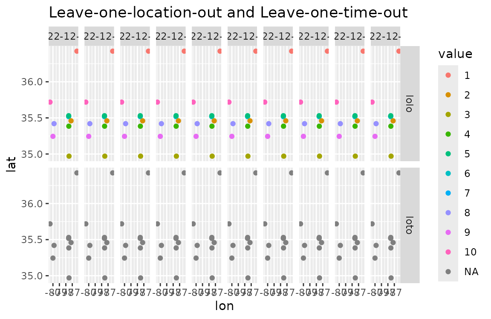
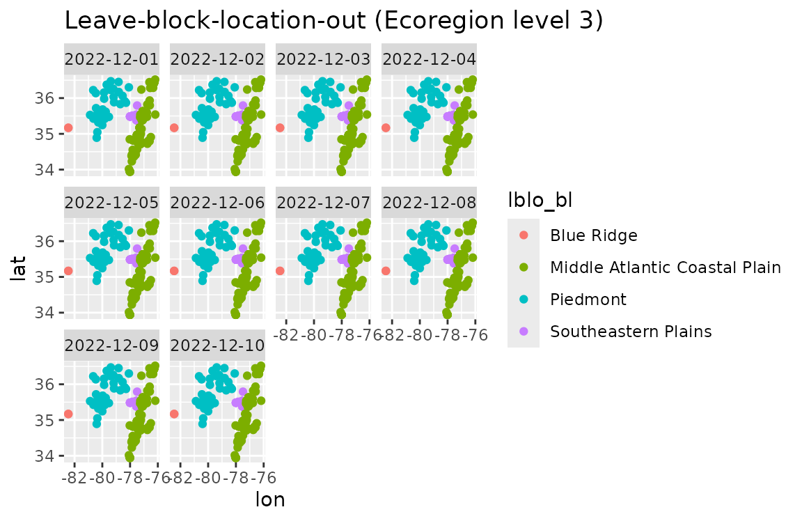

Spatiotemporal cross validation types
Insang Song
2023-11-13
Source:vignettes/cross_validation_types.Rmd
cross_validation_types.Rmd## Reading layer `test_nc_output_mod' from data source
## `/home/runner/work/NRTAPmodel/NRTAPmodel/tests/testdata/test_nc_output.nc'
## using driver `netCDF'
## Simple feature collection with 166 features and 8 fields
## Geometry type: POINT
## Dimension: XY
## Bounding box: xmin: -82.44781 ymin: 33.94194 xmax: -76.18192 ymax: 36.51828
## Geodetic CRS: WGS 84
nco_s <- nco |>
dplyr::sample_n(10)
ncost <-
split(x = seq(1, 10), f = seq(1, 10)) |>
lapply(function(x) as.POSIXct("2022-11-30") + (x * 8.64e4)) |>
lapply(function(x) mutate(nco_s, time = x)) |>
Reduce(rbind, x = _)
dim(ncost)## [1] 100 10
ncost <-
sftime::st_as_sftime(ncost,
time_column_name = "time"
)
# to stdt
ncostdt <- convert_stobj_to_stdt(ncost)
# random-ordered sftime -> stdt: is ordering working well?
ncost_dis <- ncost[sample(1:100, 100), ]
ncostdtd <- convert_stobj_to_stdt(ncost_dis)
all.equal(ncostdt$stdt, ncostdtd$stdt)## [1] TRUE
index_lolo <- generate_cv_index(ncostdt, "lolo")
index_loto <- generate_cv_index(ncostdt, "loto")
index_lolto <- generate_cv_index(ncostdt, "lolto")
ncodto <- data.table::copy(ncostdtd$stdt)
ncodto$lolo <- index_lolo
ncodto$loto <- index_loto
ncodto$lolto <- index_lolto
ncodtol <- ncodto |>
data.table::melt(
id.vars = c("lon", "lat", "time"),
measure.vars = c("lolo", "loto", "lolto")
)
ncodtol$value <- factor(ncodtol$value)
ggplot(
data = ncodtol[variable != "lolto", ],
mapping = aes(x = lon, y = lat, color = value)
) +
geom_point() +
labs(title = "LOLO and LOTO") +
facet_grid(variable ~ time)
ggplot(
data = ncodtol[variable == "lolto", ],
mapping = aes(x = lon, y = lat, color = value)
) +
geom_point() +
labs(title = "LOLTO") +
facet_wrap(~time)
# data preparation for larger stdt than the previous example
ncost <-
split(x = seq(1, 10), f = seq(1, 10)) |>
lapply(function(x) as.POSIXct("2022-11-30") + (x * 8.64e4)) |>
lapply(function(x) mutate(nco, time = x)) |>
Reduce(rbind, x = _)
dim(ncost)## [1] 1660 10
ncost <-
sftime::st_as_sftime(
ncost,
time_column_name = "time"
)
# to stdt
ncostdt <- convert_stobj_to_stdt(ncost)
index_lblo <- generate_cv_index(ncostdt, "lblo", cv_fold = 5L)
index_lbto <- generate_cv_index(ncostdt, "lbto", cv_fold = 5L)
index_lblto <- generate_cv_index(ncostdt, "lblto", sp_fold = 3, t_fold = 5)
ncodt <- data.table::copy(ncostdt$stdt)
ncodt$lblo <- index_lblo
ncodt$lbto <- index_lbto
ncodt$lblto <- index_lblto
ncodtl <- ncodt |>
data.table::melt(
id.vars = c("lon", "lat", "time"),
measure.vars = c("lblo", "lbto", "lblto")
)
ncodtl$value <- factor(ncodtl$value)
ggplot(
data = ncodtl[variable != "lblto", ],
mapping = aes(x = lon, y = lat, color = value)
) +
geom_point() +
labs(title = "Leave-block-location-out and\nLeave-block-time-out") +
facet_grid(variable ~ time)
ggplot(
data = ncodtl[variable == "lblto", ],
mapping = aes(x = lon, y = lat, color = value)
) +
geom_point() +
labs(title = "Leave-block-location-time-out") +
facet_wrap(~time)
eco4 <- readRDS("../tests/testdata/ecoregion_lv4.rds")
eco4d <- eco4 |>
group_by(US_L3CODE, US_L3NAME) |>
dplyr::summarize(nsubregions = n()) |>
ungroup()
ncodt <- data.table::copy(ncostdt$stdt)
index_lblo_sf <-
generate_cv_index(
ncostdt,
"lblo",
blocks = eco4d,
block_id = "US_L3NAME"
)
ncodt$lblo_bl <- factor(index_lblo_sf)
index_lblo_tr <-
generate_cv_index(
ncostdt,
"lblo",
blocks = terra::vect(eco4d),
block_id = "US_L3NAME"
)
ncodt$lblo_blt <- factor(index_lblo_tr)
all.equal(index_lblo_sf, index_lblo_tr)## [1] TRUE
ggplot(
data = ncodt,
mapping = aes(x = lon, y = lat, color = lblo_bl)
) +
geom_point() +
labs(title = "Leave-block-location-out (Ecoregion level 3)") +
facet_wrap(~time)
# TODO: irregular temporal blocks
index_random <- generate_cv_index(ncostdt, "random", cv_fold = 10L)
ncodt$random <- factor(index_random)
ggplot(
data = ncodt,
mapping = aes(x = lon, y = lat, color = random)
) +
geom_point() +
labs(title = "Random") +
facet_wrap(~time)